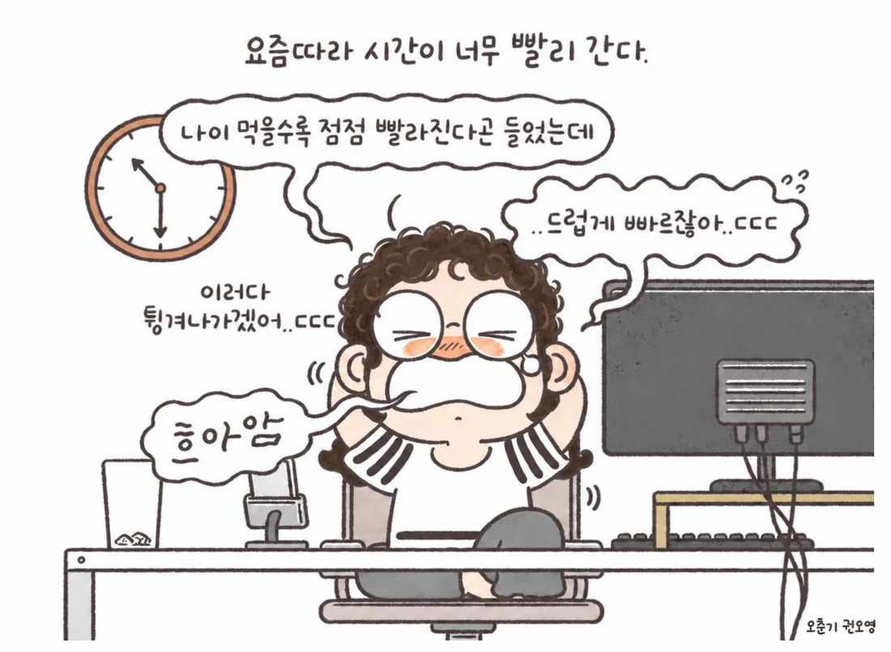

Today
상신하고, 시작하고, 확인하세요.

오늘 기록은 [기록] 탭에 자동으로 쌓입니다.
초과근무 시작 시각을 기준으로 알립니다. 예) 첫 알림 0시간 55분 · 간격 1시간 0분 · 5분 동안 → 18:00 시작이면 18:55~19:00 사이 1분마다 알림창, [확인]을 누르면 다음은 19:55~20:00, 20:55~21:00… 순서입니다.
조기출근·저녁 초과근무 각각 상신시간과 겹치는 시간만 더한 뒤, 평일은 하루 한 번 공제 · 토요일·일요일·공휴일은 공제 없이 인정. 숫자는 소속 기관 규정에 맞게 바꾸세요.
2026~2027년 공휴일·대체공휴일이 미리 들어 있습니다. 정부 발표가 바뀌거나 기관 휴일이 따로 있으면 여기서 추가·제외하세요.
기록은 이 기기(이 브라우저)에만 저장됩니다. 브라우저의 쿠키·사이트 데이터를 지우면 함께 지워질 수 있으니 한 달에 한 번쯤 백업하세요.